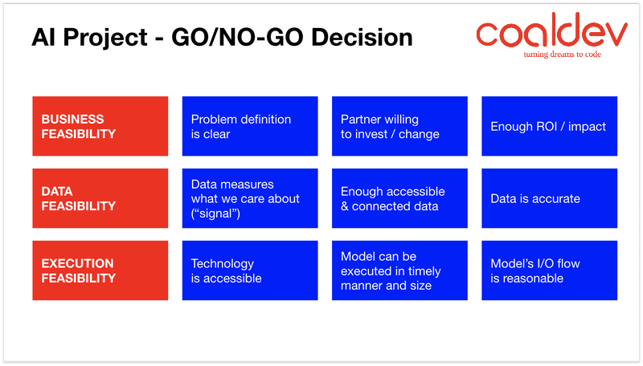

email us at contact@coaldev.com
We operate on an agency model and we charge a man day rate for the service. You own the intellectual property.
A proof of concept (PoC) is the first stage of an AI project. Think of it as a “mini project” during which we do initial experimentation with the data and the result of it will determine the feasibility of launching a larger-scale project into production.
It takes on average 4 - 6 weeks to deliver a working proof of concept. For a deployment-ready solution, most projects take 3 - 6 months.
You should expect a minimum budget commitment between 10,000 - 20,000 USD for the proof of concept phase (step 1). The costs of scaling a PoC to production (step 2) depend a lot on your use case and we’ll provide you with a tailor-made cost estimate.
We’re happy to continue working with you beyond the initial project period and make sure the project is a long-lasting success. Let’s discuss the details together!
This will depend on the scale of the project, and the allocation of different roles evolves during the project. In the beginning, more scientific roles are needed, while more engineering roles are important towards the end. For a typical project, you can expect a team to consist of an AI scientist, multiple AI engineers (and full-stack engineer(s) in case some non-AI parts are a part of the scope) and a project manager.
After your project is live, there are generally two things that cost money: infrastructure (servers, storage, ...) and the “human in the loop”. The costs vary depending on the project (and we’ll help you find a cost-effective solution), but the good news is that with AI, it’s never really maintenance, but rather an investment - you’re making your AI models better every day!
No, unless absolutely necessary. We’re not an infrastructure provider and we use the same cloud services everyone else uses, so it’s almost always more practical to use a client's cloud account right away. We’re used to working with all three major platforms (AWS, Google Cloud, Azure). In the rare cases where we do provide server infrastructure, we simply re-invoice the monthly bill.
We find it practical for us to directly manage the annotation process, but we don't typically do the work ourselves. Annotators can be sourced from within your company, or hired at a very low cost using one of the many data labelling platforms and providers. However, if there's an opportunity to generate some of the training data programmatically (and there often is), that's where we come in again.
For most projects, we use an industry-standard Python stack, typically with Keras/TensorFlow/PyTorch on the top. We often use Django for web app front-ends, Flask for lightweight APIs, OpenCV for computer vision and spaCy for NLP. We try to stay clear from obscure libraries so that our code can be easily taken over by your internal developers.
Yes, absolutely. As long as the conditions reflect the market standard, we're happy to sign.
Yes. Our work is delivered as “work for hire”, which means you will own the intellectual property for all the code we write. We also make sure that the open-source libraries we use are distributed under a business-friendly license.
No. Patent infringement is a complex, jurisdiction-dependent legal topic that should be left to lawyers. We will fully support your patent attorney should you decide to conduct a clearance search.
While we’d be happy to assist you in making that assessment, a good place to start would be this slide:
Yes, if supported by humans. At least that would be the most typical answer. Most AI models require human supervision (correcting mistakes) in order to get better, and we will provide you with the tools, guidelines, and training to make it happen.
While this will largely depend on your use case, training AI does usually require a significant amount of data. If you're not sure whether your data is a good fit for AI, let's talk and we can find out together!
This is a tricky question. While achieving 99% accuracy is upheld as the Holy Grail, the accuracy myth is something to be wary of. More often than not, it’s not what you would expect, and if you want to learn why, here’s a piece we wrote on the topic: 99% Accuracy = 99% Lie.
There are hundreds of great resources all over the internet, and this is a great place to start: The Non-Technical AI Guide. Furthermore, you can read our blog.
email us at contact@coaldev.com
© 2021 Coaldev.com All Rights Reserved.